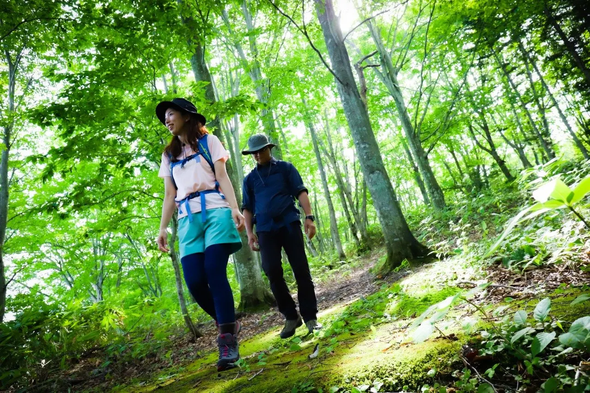
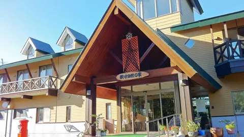
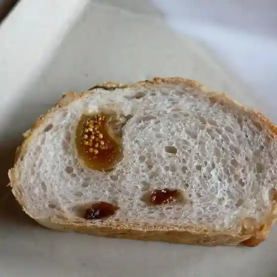
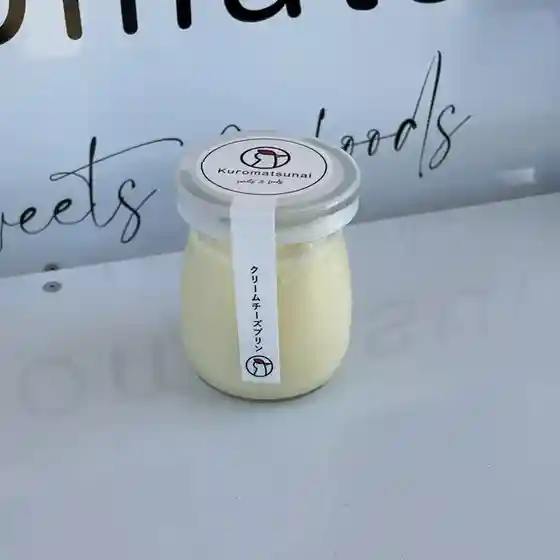
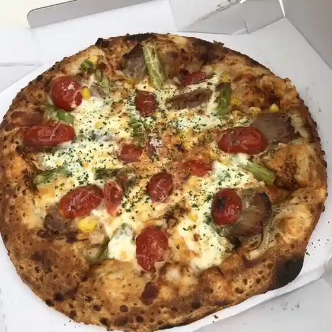
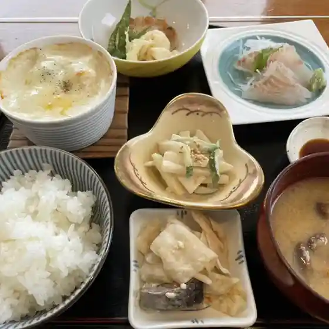
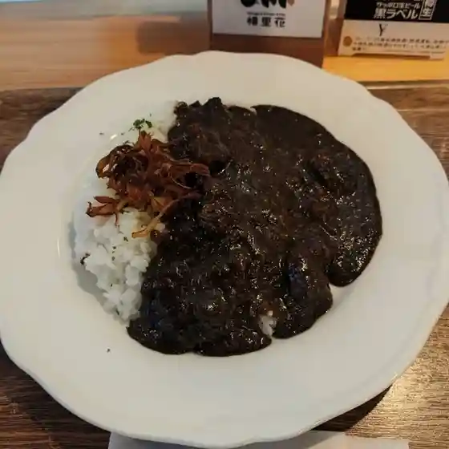
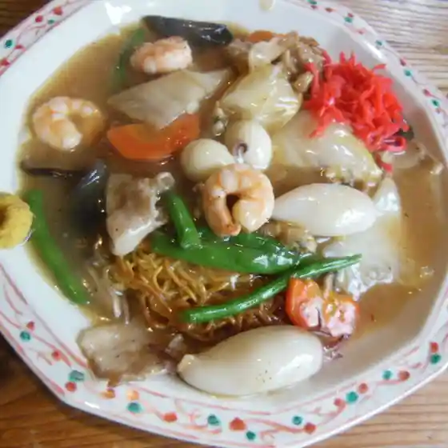
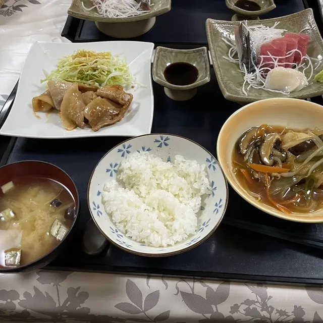
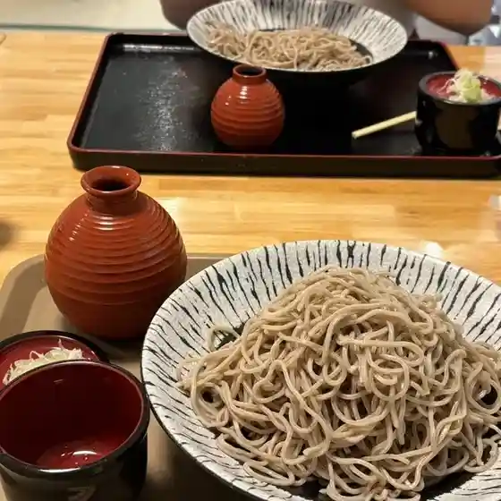

Japan / Hokkaido / Kuromatsunai
Kuromatsunai
Kuromatsunai · Hokkaido
Kuromatsunai
Highlighted on the Hokkaido map.

Stay
小間旅館
Koma Ryokan
Ryokan inn in Kuromatsunai, Hokkaido.
歌才自然の家

Utasai Shizen no Ie
Nature lodge in Kuromatsunai, Hokkaido.
Dining
手作りケーキとパンの店 マザーネイチャー

Tezukuri Keeki To Pan No Mise Mazaaneichaa
クマゲラワゴン

Kumagerawagon
ピザドゥ

Pizadou
我つま

Ware Tsuma
Kumagera Kitchen 樻里花

Kumagera Kitchen Hana
黒ひげ

Kuro Hige
及川旅館

Oikawa Ryokan
黒松内温泉ぶなの森

Kuromatsunai Onsen Bunano Mori
小間旅館
Koma Ryokan
新ちゃん
Arachi Yan
木村家菓子舗
Kimura Ie Kashi Ho
toit vert Ⅱ
Toit Vert Ⅱ
黒松内町ブナセンター
Kuromatsunai Machi Bunasentaa
とうふ処 みうら
Toufu Tokoro Miura
タンポポハウス
Tanpopohausu
トワ・ヴェール
Towa Veeru
そば屋この花
Soba Ya Kono Hana
チーズ工房アンジュ・ド・フロマージュ
Chiizu Koubou Anju Do Furomaaju
The Nuthatch
The Nuthatch
aimer
Aimer
丸田田中商店
Maruta Tanaka Shouten
和生菓子 すずや
Kazuo Kashi Suzuya
ブナ自然学舎 ビーチ・カフェ
Buna Shizengaku Sha Biichi Kafe
Sights
Kasai Buna Hayashi Gaidooku
Kasai Buna Hayashi Gaidooku